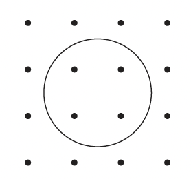
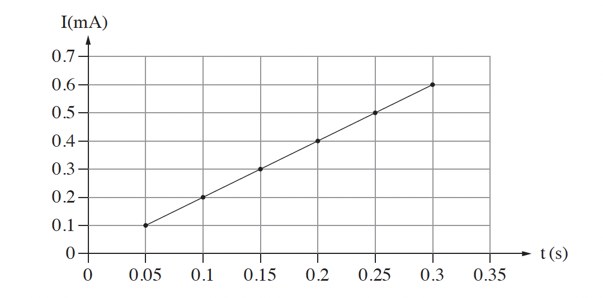

שאלה 6
נתון שדה מגנטי B שכיוונו בכיוון ציר ה-x ועוצמתו משתנה כפונקציה של x על פי הקשר: Bx(x) = B0,x - K · x.
רכיבי השדה בכיוונים האחרים ניתנים להזנחה.
מניחים טבעת עשויה חומר מוליך במיקום x = 0. מרגע t0 = 0 מניעים אותה בכיוון החיובי של ציר ה-x, בתאוצה קבועה שגודלה a. במשך התנועה כולה מישור הטבעת ניצב לציר ה-x.
בתרשים שלפניכם מתוארים הטבעת ורכיב השדה המגנטי Bx עבור נקודה מסוימת על ציר ה-x (x > 0).
הכיוון החיובי של ציר ה-x הוא "החוּצה מן הדף".

נתון כי ערכו של הקבוע K הוא 0.02, על פי מערכת היחידות S.I (מערכת היחידות הסטנדרטית). רשמו מה הן היחידות של הקבוע K. (5 נקודות)
הסבירו מדוע במהלך תנועתה של הטבעת זורם בה זרם חשמלי. (6 נקודות)
השטח התחום על ידי הטבעת הוא A, והתנגדות הטבעת היא R.
פתחו ביטוי עבור גודל השטף המגנטי כפונקציה של הזמן t והפרמטרים B0,x, a, K, ו-A. (7 נקודות)
פתחו ביטוי עבור עוצמת הזרם בטבעת כפונקציה של הזמן t והפרמטרים R, a, K, ו-A. (6 נקודות)
הזרם בטבעת נמדד ברגעים שונים. תוצאות המדידות מוצגות בגרף שלפניכם. שימו לב כי הזרם נמדד במילי אמפר.

נתון: R = 0.04Ω, a = 2 m/s2.
על פי שיפוע הגרף, חשבו את השטח A התחום על ידי הטבעת. (5 נקודות)
קבעו אם ברגע t = 0.2s כיוון הזרם בטבעת הוא עם כיוון השעון או נגד כיוון השעון. נמקו את קביעתכם. (4 13 נקודות)